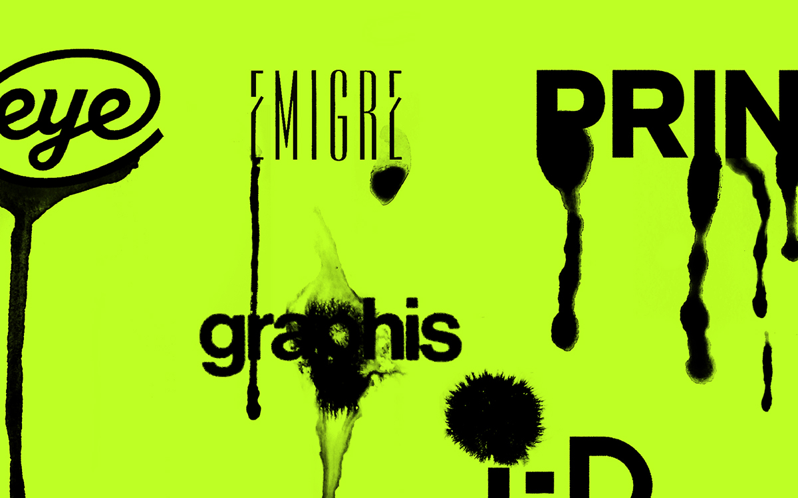

Words by
Jarrett Fuller
Published on
August 19th, 2020

01
Image by Chloe Sheffe.
We graphic designers have a love-hate relationship with criticism. We say we want more of it and then complain when we get it. We want the general public to understand what we do, yet when they write about our work, we pick apart how they got it wrong. We say we want a seat at the table, to be respected by business, but then complain that all we get is a devolved ‘design thinking.’ For people who market themselves as clear communicators, we have a hard time explaining what it is we actually do, let alone articulate what the criticism we continually call for should look like. Ask a dozen designers what graphic design criticism is and you’ll get a dozen different answers.
This is the question writer Rick Poynor asked designer Michael Rock in the now-seminal dialog published in Eye Magazine in 1995, “What Is This Thing Called Graphic Design Criticism?” “Compared to art or film criticism, the term ‘graphic design criticism’ has an unfamiliar, slightly uncomfortable ring,” Poynor begins. “It is one that even the most avid reader of graphic design magazines and books will encounter rarely, if at all.” The two go on to discuss the relationship between design and writing and what type of design criticism they want to see more of. Where Poynor articulates a type of ‘journalistic criticism’ that frames a designer or designed object in a larger context, Rock was interested in applying cultural criticism, like literary theory or semiotics, to design writing.
The conversation was published in the middle of a kind of a design criticism renaissance. Poynor’s own Eye magazine was a leading design publication, along with Emigre, the Bay Area avant garde magazine from the eponymous type foundry by Rudy VanderLans and Zuzana Licko. Around the same time, magazines like Print and I.D. (where Rock was a graphic design journalist) began publishing critical pieces on graphic design, as were the handful of academic journals dedicated to design. A year earlier, designers Michael Beirut, William Drenttel, and design writer, and historian Steven Heller published the first book in the Looking Closer series, an anthology of the best recent design writing that, over the next decade, would span five volumes. Indeed, this was an era of abundance. Photoshop 1.0—released in 1990 for $850 for the Macintosh Plus—lowered the bar for entry, speeding up the design process and allowing for more complex layouts and a new wave of typeface design. Debates raged between the modernists, who were skeptical of the new aesthetics emerging, and postmodernists interested in pushing the limits of this new technology. So it’s not surprising to find Rock optimistic about the future of criticism at the end of his conversation with Poynor: “We are perhaps the first generation of writers who consider themselves, as a form of self-definition, to be graphic design critics, and that sense of being at the beginning of something is extremely liberating.”
Yet when the two reconvened nearly 20 years later for a follow-up conversation, published in Rock’s 2013 monograph Multiple Signatures, much of that bright-eyed optimism is absent. “I don’t think we need too many more vague academic ‘calls’ for criticism,” Poynor says. “We need action. We need a lot more criticism and places to disseminate it.” Poynor’s language here is reminiscent of Massimo Vignelli’s, who, when asked to write a forward to the 1983 Graphis Annual, used his space to issue a call for a more rigorous design criticism:
“It is time that theoretical issues be expressed and debated to provide a forum of intellectual tension out of which meanings spring to life. Pretty pictures can no longer lead the way in which our visual environment should be shaped. It is time to debate, to probe the values, to examine the theories that are part of our heritage and to verify their validity to express our times. It is time for the word to be heard. It is time for Words of Wisdom.”
Vignelli, trained as an architect, looked longingly at the discourse around architecture and wanted the same for graphic design. This desire seems to be shared by many, but if one were to look at the discussions around design criticism over the last 30 years, Poynor and Rock’s optimism feels like an outlier. There are seemingly perennial calls for more design criticism, much like Vignelli’s. Steven Heller, writing in AIGA’s The Journal in 1993 wrote, “A profession that cannot support professional critics is in danger of perpetually noodling its navel.”
Here’s Poynor again in 2005, in a post on Design Observer called “Where Are the Design Critics?”: “How are designers going to become critical in any serious way if they are not exposed to sustained critical thinking about design in the form of ambitious, intellectually penetrating criticism?” In 2012, Alexandra Lange wrote in Print magazine, “If design—graphic, product, interaction—needs criticism to make it whole and mature, it seems clear we aren’t there yet.” And here’s Khoi Vinh, writing in Fast Company in 2018, “Design, as an industry, has never been able to support a truly robust class of professional journalists and critics… even the idea of someone spending their days writing reviews of brand identities, design systems, app experiences, and the design of new products seems far-fetched.” The not-so-subtle message here is that the profession needs a critical discourse around it to be taken seriously.
02
Image by Chloe Sheffe.